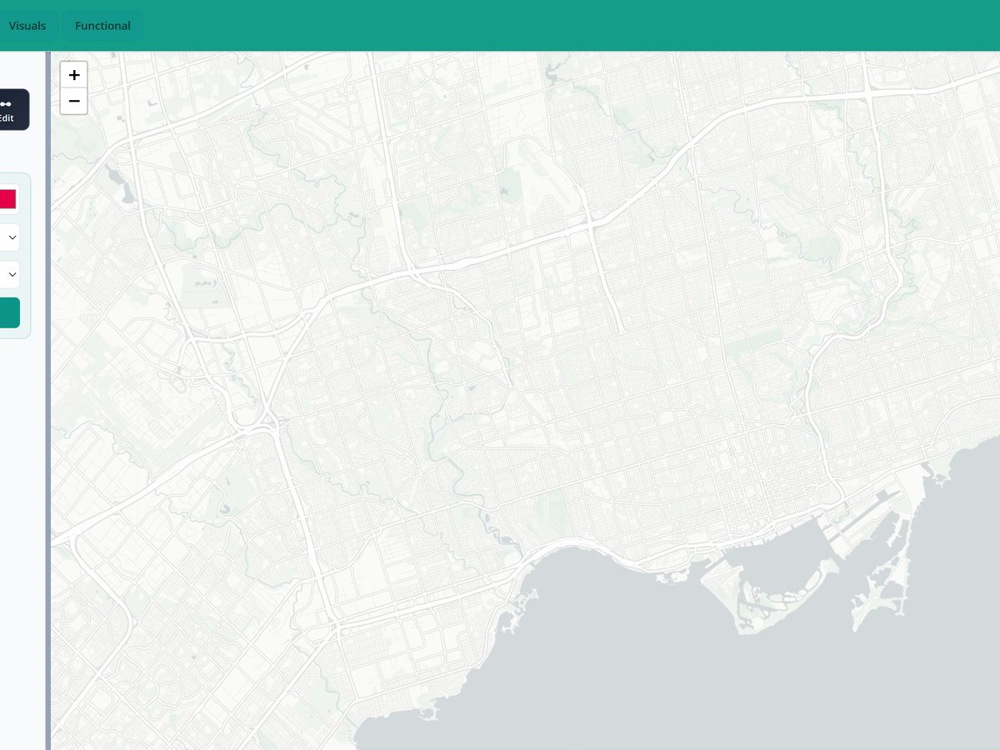
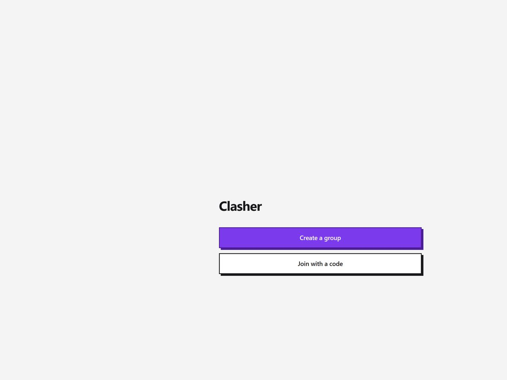
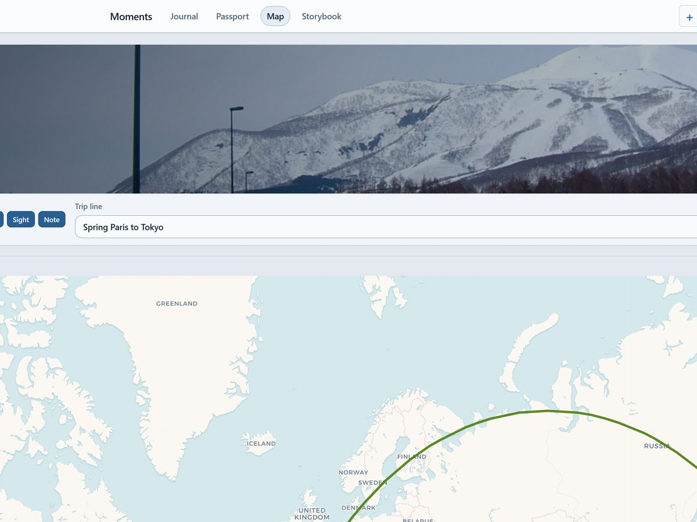
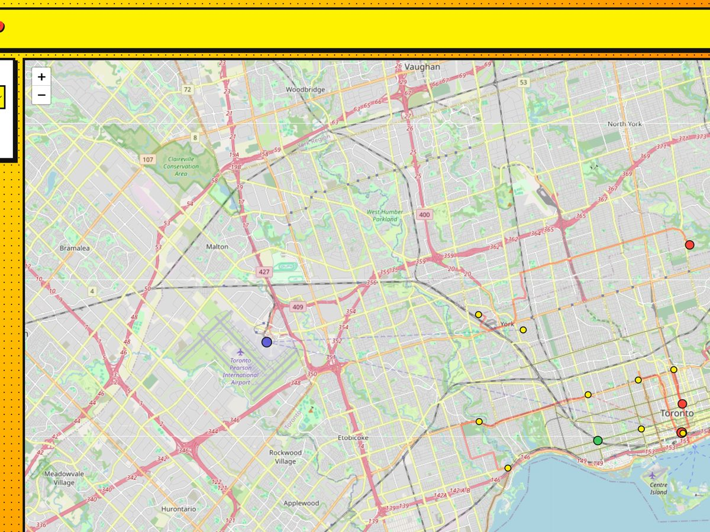
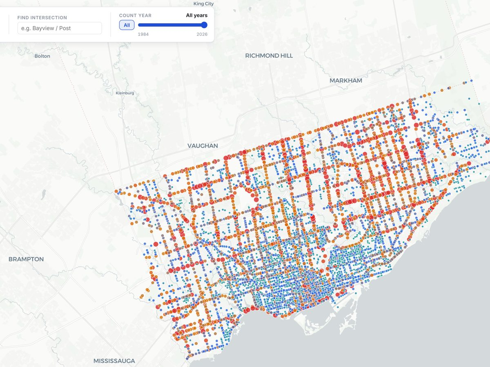

01

Trainbox
A map-first transit diagram creator. Draw routes, place stops, export clean network diagrams, and import existing systems onto real geographies.
Hi! I'm Andre, a fourth-year student at UofT. Lately I've been getting into building cool things inspired by what I'm passionate about, and by the stuff I use every day. This is a repo of them. Check it out, and tell me what you think!
Toronto, CA
A map-first transit diagram creator. Draw routes, place stops, export clean network diagrams, and import existing systems onto real geographies.
Group music festival planning. Aggregate schedules, decide who's seeing who, and create playlists directly from lineups.


A log of all your memories, from trips around the world to walks in the park. A digital memory book, if you will.
Visualize your transit trips based on your Presto card data. See your destinations, the paths you took, and your favourite places.

Google Maps, but on steroids. See next trip departures, plus system-level visualizations, trip block information, vehicle statuses, and internal schedules.
Visualize traffic data at intersections across the city of Toronto. See when it's busy, what types of traffic are running, and model different scenarios.

Sourcing transformation project for one of Canada's largest retailers. Returning as a full-time Associate in Jan 2027.
Regulatory risk projects for financial services, including technology, workforce organization, AI deployment, and payments.
Process execution and improvement within the Finance Shared Services team. Recipient of the Make A Difference Award.
Workforce strategy research under Dr. Nan Li.
Welcoming passengers from around the world to Toronto, with 600+ interactions per shift.
Led the delivery of debate programming to schools and communities across Southern Ontario.
Organized some of North America's largest debate events, including the flagship university debating championships. Cumulative revenue of over $100,000.
Delivered vaccine programs and community outreach in Northwest Toronto.
Cities, public transit systems, and public infrastructure.
Aviation, passenger railways, and transit systems. I collect farecards and maps from all around the world.
EDM and radio pop. Favourite one to date has been Coldplay, 2025.
Restaurants, especially all-you-can-eat ones. Favourite place is Happy Lamb Hot Pot.
In the last year, I've gotten free trips to Coachella, Scotiabank Arena, Vancouver, and New York City.
University of Toronto Scarborough, 2026 (pending)